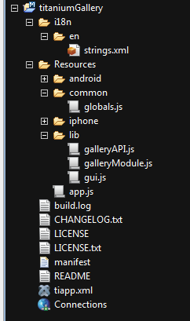

Thank you for purchasing my component. If you have any questions that are beyond the scope of this help file, please feel free to email via my user page contact form here. Thanks so much!
//################# MODULES ##################
var VARS =require('common/globals'); //Here we store all global variables / settings
var Gallery=require('lib/galleryModule'); //Here are the functions to create the gallery
This is the folder structure you should end with.

Gallery.createGalleryList({
win:galleryWindow, //The window to display in [Required]
title:"NextGen Gallery", //Title of the window [Required]
type:VARS._NEXT_GEN, //The type of the gallery [Required] [_NEXT_GEN,_FB_GALLERY,_PICASA,_FLICKR]
tab:tab1, //The tab that gallery will open its sub views [Required]
openType:1, //For future modifications of the gallery [Required]
id:1, //Id of the NextGenAlbum [Required if type=_NEXT_GEN]
url:VARS._NextGen_Address, //Adress of your blog [Required if type=_NEXT_GEN]
page:VARS._FBPageID, //Facebook Page id [Required if type=_FB_GALLERY]
userID:VARS._PicasaUserId, //Picasa User id [Required if type=_PICASA]
appKEY:VARS._FlickrAppKEY, //Flickr app key [Required if type=_FLICKR]
userID:VARS._FlickrUserID, //Flickr User id [Required if type=_FLICKR]
});
After this call the gallery will be in the wiindow you passed as parameter. in this example galleryWindow.
Then you should open that window in the tab you passed as parameter.
tab1.open(galleryWindow);
Now you will configure the gallery to use your gallery insted of the default.
This will be very easy
*Remember to change the Flickr App Key with your own
If you have dificulties to follow the documentation please "Open project from existing source" and there use the "example" folder.
Review the code and if you have any questions email me.
I have used the Envanto Flick profile fo shocase my work.
Images that I have used in the projects are
Once again, thank you so much for purchasing this module. As I said at the beginning, I'd be glad to help you if you have any questions relating to this theme. No guarantees, but I'll do my best to assist.
Daniel Dimov